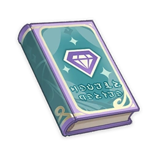

Teyvat & Unknown · Books & Literature
Heart's Desire
This four-volume fantasy collection follows a fox-eyed shopkeeper and visitors who bring stories of grief, desire, betrayal, and regret. Volume 3 names the Three Moons; later lore gives context for Liyue’s story-telling tradition without confirming this collection’s author.

Collection record and four titles
Heart's Desire is a four-volume fantasy collection that the in-game catalog describes as widely popular around Teyvat. Its volumes are titled Moonlight, Glaze, Sapphire, and Heart of Stone. Each begins with directions for finding a mysterious antique shop, then turns to a visitor, an object, and an unfinished emotional problem. The work names no author, and its framing presents these episodes as fantasy stories rather than a chronicle.
The books are distributed across Mondstadt and Liyue: Moonlight and Glaze are in the Knights of Favonius Headquarters, Sapphire is sold by Jifang at Wanwen Bookhouse, and Heart of Stone is found by Bolai's shop in Liyue Harbor. The volume locations make this a cross-region collection; they do not establish that the shop in the stories exists in the present-day world.
Moonlight: a lover and a bottle of wine
In Moonlight, Veiga enters the shop hoping to forget a young man who disappeared from her life. The fox-eyed shopkeeper gives her wine that temporarily eases pain, while explaining that it cannot erase the memories she still values. The volume then reveals the young man's side: he believes a strange crystal sphere means he is one of the chosen who will someday disappear from the world, so he leaves before Veiga can lose more time with him.
The story never identifies the sphere or verifies the young man's belief. Its ending instead turns on an intimate choice: Veiga's memories remain capable of returning, and the shopkeeper refuses to take the decision about a more complete forgetting out of Veiga's hands. The prophecy-like fear belongs to the story's characters, not to a general rule about people who receive a Vision or another object.
Glaze: the crystal heart
Glaze follows Yu'an, who asks the shopkeeper for a gift to accompany his plan to propose. She lends him a ten-sided illuminating crystal and tells him that a true crystal heart can reveal what lies within a person's heart. Her explanation says such crystals form from the unfulfilled desire and grief of powerful illuminated beasts at the end of life; that is the shopkeeper's account within a fantasy story, not a field guide to every illuminating crystal in Teyvat.
The crystal shows Yu'an a sweeping vision of changing landscapes and civilizations. The woman he pursues later brings it back, explaining that the gift unsettles her. The shopkeeper sees Yu'an's opportunism: he hopes to marry into a wealthy salt-producing family. She accepts salt in exchange for the crystal and reflects that she has recovered a heart she once left behind. The episode uses the object to expose motives, while leaving the shopkeeper's past deliberately indirect.
Sapphire: legends kept in the shop
In Sapphire, the shopkeeper's longtime visitor is a burglar who asks for the wine that helps people forget someone they long for. He describes longing as a burden he wants to discard. A sorceress then arrives with a blue crystal removed from an aristocrat's silver goblet; the burglar gave it to her, and she was punished for receiving it. She wants to part with it, but the shopkeeper takes it back and keeps it among the shop's stories.
As she studies the gem in moonlight, the narrator groups its legend with other tales: a sea of dandelions, three bright moons named Aria, Sonnet, and Canon who died in a catastrophe, and a witch whose foresight did not save her from a broken heart. This is the collection's clearest mention of the Three Moons. The passage calls these legends, and does not claim to be a complete or neutral history of the moon sisters.
Heart of Stone: fear, betrayal, and revenge
Heart of Stone returns to the Liyue harbor shop. A rain-soaked visitor seeks a way to settle an old score, and the shopkeeper gives him a piece of Cor Lapis. A later customer tells the story of two miners who found valuable ore, agreed to split it, and were divided by fear and violence. The tale links the stone, a blood-marked payment, a broken promise, and a second fatal fall, then leaves the shopkeeper wondering whether the score is truly settled.
The ending preserves uncertainty about what has happened outside the narrated account and whether either customer has found freedom. Its claims that Cor Lapis is the soul of the rocks and can preserve an owner's regret are introduced as legends. They should not be treated as a definitive explanation of the mineral's powers or of a real Liyue crime.
Ziqiao and the route from legend to book
Later Liyue lore gives new context to the way stories might travel between people. Zibai's Character Story 4 identifies Ziqiao as one of her severed selves and says she sometimes helped mortals in distress while passing on stories from before the sky collapsed. It also says human retellings could stray from what Ziqiao intended. In The Realm of People, Ziqiao offers a girl a story and suggests she could sell it at a bookstore in return for help.
Those passages fit the book's framing as popular fantasy built around old legends, and they sit beside its Three Moons passage. But the game does not name Heart's Desire in that exchange or directly credit Ziqiao with this collection. It is fair to read the later lore as an explanation for a possible storytelling tradition; naming this exact volume as her work remains an inference.
Reading the collection as lore
The strongest connections are the ones the text states: the collection is popular fantasy; its recurring shopkeeper gathers objects and legends; and Sapphire names Aria, Sonnet, and Canon. Newer Liyue lore establishes Ziqiao as a storyteller whose tales could reach books, while also warning that recorded versions may change. Together, these details make Heart's Desire relevant to Teyvat's memory of the moons without turning each story into a reliable historical account.
The shopkeeper's identity, the unnamed lovers and customers, the young man's crystal sphere, and the sorceress's future are not resolved by the collection. The similarities between these characters and named people elsewhere can invite comparison, but the four volumes do not provide a key that confirms those identities. Keep the book's printed legends, later character lore, and reader theories distinct.
This is an original CoreGG reading guide, not an official HoYoverse article or a reproduction of the game text. Source links below identify the records used so you can check the original context.
Sources & references
Check these sources for the original game text and reference trail.